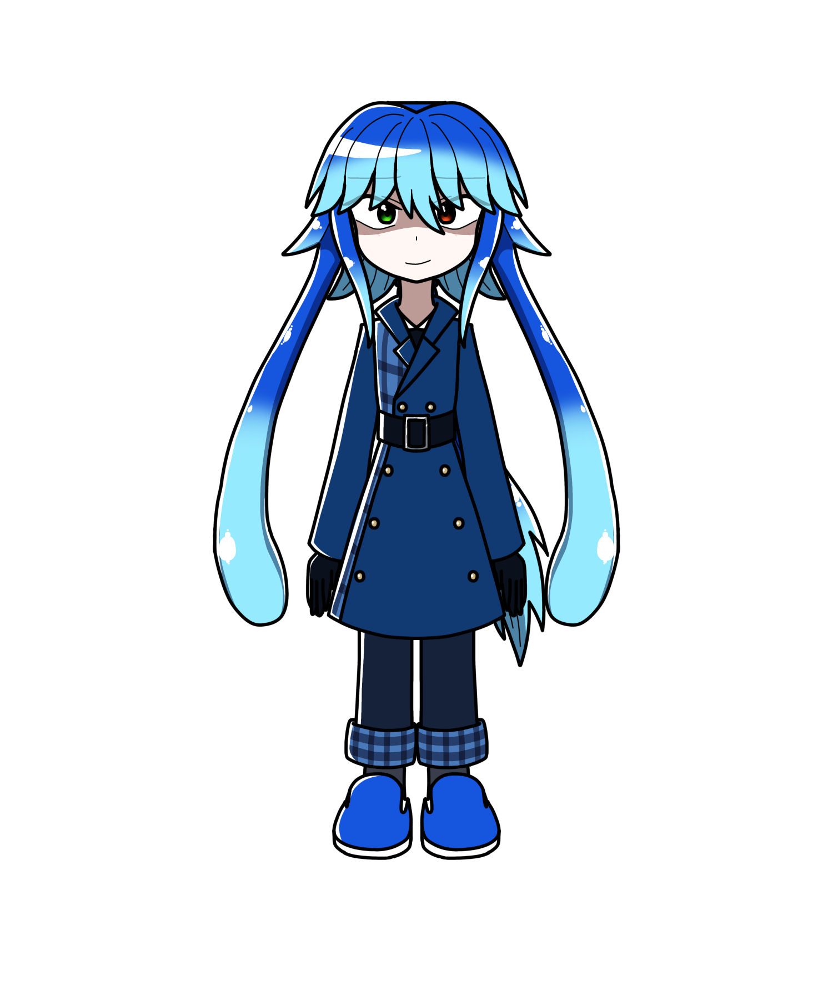

ハルマ・カフィ
概要
アーマ・カフィ博士によって生み出されたミュータント。
プロフィール
| 種族 | ミュータント |
|---|---|
| 性別 | 男性 |
| 年齢 | 18歳 |
| 誕生日 | 2月29日 |
| 身長 | 185cm |
| 血液型 | O型 |
| 出身 | ギゼリエ |
| イメージカラー | 青 |
| イメージCV | 子安武人 |
人物像
外見
この髪は伸縮自在である。
触り心地は長夜曰く「蒟蒻みたい」
性格
自らを「嫌われ者」「化け物」と呼び、
自身が嫌われていたり怖がられているのを知ると
喜ぶ。
卑屈かつ陰気な性格。
トラブルメーカーで嫌がらせを好む。
素の性格は寂しがり屋かつ臆病。
加えてお人好し。
一方過去の生い立ちから「優しくされるのは見捨てられる前兆」
だと思ってしまい、正面からの素直な優しさや愛情に耐性がない。
誰かが本当に苦しみを抱えてどうしようもなくなっている場合は
普段の振る舞いを解いて手を差し伸べられる優しさを持つ。
辛い食べ物が好物だが、極端に辛すぎる物は苦手。
一応生の肉も食べることが可能。
他者から触手を触られると
極度のくすぐったさを感じるため、
触られるのは苦手。
口調
能力
前述したように、髪の毛を触手に変えることが出来る。
触手の力はかなり強く、ドラム缶も簡単に潰せる。
睡眠中でも危険察知により自動反応する。
経歴
失敗作と誤って捨てられてしまい、
光の射さない場所で独り親の帰りを待つ。
活躍
人物関係
天花寺エルゼ
初めて会った時は敵対していた。
ソフィアへの威嚇として触手を彼女の身体に巻き付け
締め付けていたところをエルゼに引き千切られてしまった。
門叶長夜
嫌な奴同士で親友（というより悪友？）
花形グウィン
悉く正反対であり
「一番苦手なタイプ」として距離を置いているが……。
リルンを除く、唯一グウィンの秘密を知っている人物となり、
彼に対して「花形」と呼ぶ仲になる。
ちなみに仲は悪い。
蒲公英きいろ
何故か「師匠」と呼ばれ慕われている。